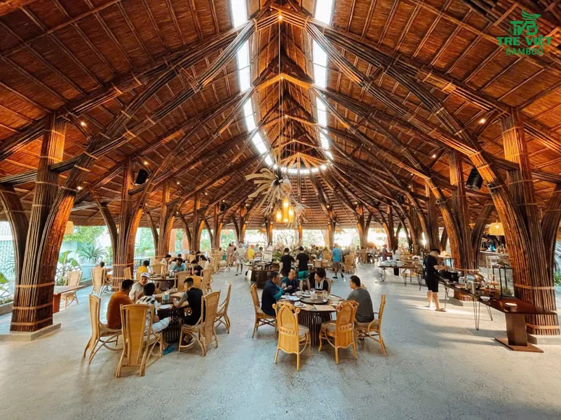
Kết cấu tre trong xây dựng là cách dùng thân tre làm bộ khung chịu lực cho công trình: cột, vì kèo, xà gồ và mái, thay cho bê tông, thép hay gỗ. Từ những chòi nghỉ nhỏ đến nhà hàng, resort có nhịp mái hàng chục mét, tre đang được các kiến trúc sư sử dụng ngày càng nhiều nhờ nhẹ, dẻo dai, thi công nhanh và gần gũi với thiên nhiên.
Tuy nhiên, để một công trình tre đứng vững lâu dài, chủ đầu tư cần hiểu đúng cấu tạo kết cấu, chọn đúng loại tre và xử lý chống mối mọt ngay từ đầu. Bài viết dưới đây tổng hợp những điểm quan trọng nhất, kèm hình ảnh công trình thực tế.
Kết Cấu Tre Trong Xây Dựng Là Gì?
Trong kết cấu tre, mỗi cây tre đóng vai trò như một thanh chịu lực. Nhiều cây tre được bó lại với nhau để tạo thành cột lớn, uốn cong để tạo vì kèo, vòm mái, rồi liên kết thành một hệ khung thống nhất. Nhờ cấu tạo thân rỗng, thớ dọc dài và dai, tre có những ưu điểm mà ít vật liệu nào có được:
Chịu kéo, chịu uốn tốt
Thớ tre chạy dọc theo thân giúp cây tre chịu lực kéo và uốn rất tốt so với trọng lượng của nó.
Dẻo dai trước gió bão
Khung tre có độ đàn hồi, rung theo gió rồi trở lại hình dạng ban đầu thay vì gãy đổ đột ngột.
Nhẹ, thi công nhanh
Tre nhẹ hơn nhiều so với bê tông, thép nên móng gọn hơn, vận chuyển và lắp dựng nhanh.
Thân thiện môi trường
Tre tái sinh nhanh, khai thác vài năm là có cây mới, công trình mát và hòa hợp với cảnh quan.
Cấu Tạo Của Một Công Trình Kết Cấu Tre
Một công trình tre hoàn chỉnh thường gồm bốn phần chính. Mỗi phần có yêu cầu kỹ thuật riêng, chỉ cần một phần làm sai là cả hệ khung bị ảnh hưởng.
Móng và chân cột
Chân cột tre không chôn thẳng xuống đất mà đặt trên đế bê tông hoặc đá, cao hơn mặt nền để tránh ẩm và mối từ đất.
Cột tre bó
Nhiều cây tre được bó thành cột lớn, phần trên tỏa ra như cành cây để đỡ mái, chia tải đều xuống chân cột.
Vì kèo, khung vòm
Tre được uốn cong theo bản vẽ, ghép thành vì kèo hoặc vòm mái, giúp vượt nhịp lớn mà không cần nhiều cột.
Xà gồ và mái
Hệ xà gồ, li tô bằng tre đỡ lớp mái lá, tranh hoặc ngói. Mái đua rộng che mưa nắng cho toàn bộ khung tre.
- 01
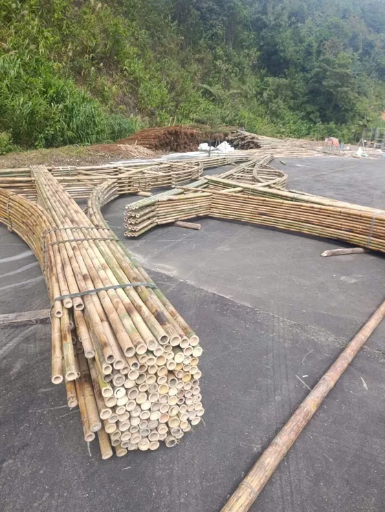
Bó tre uốn sẵn theo bản vẽ
- 02
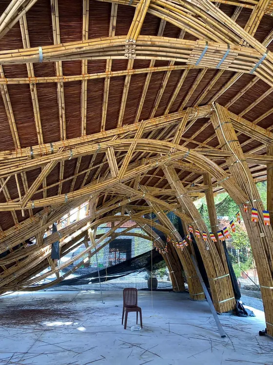
Vì kèo tre uốn cong đang dựng
- 03
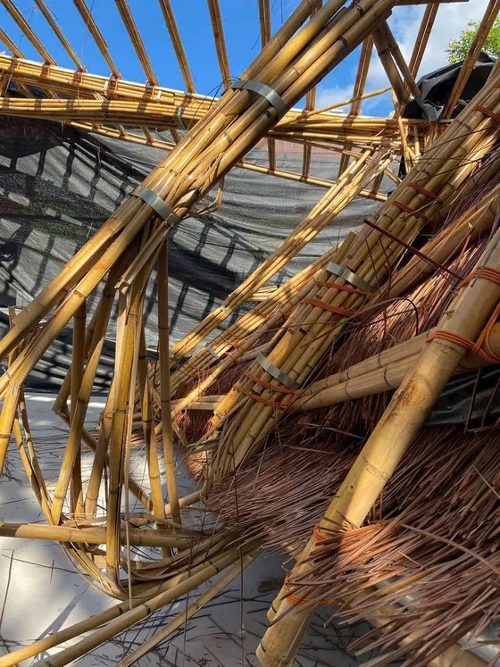
Bó và đai chặt tại nút khung
- 04
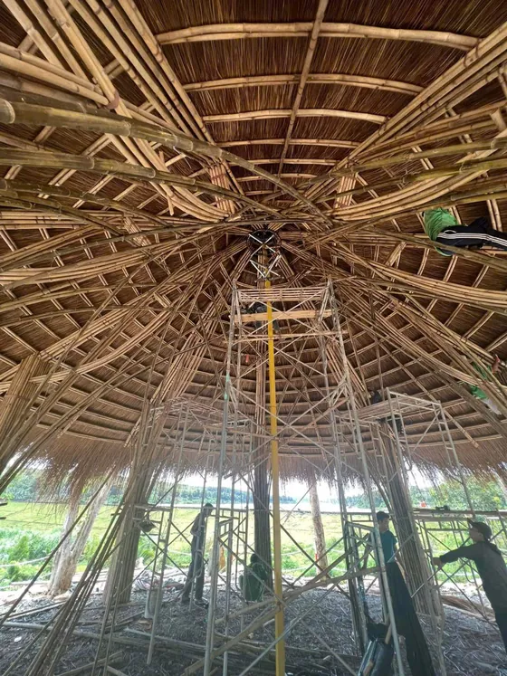
Dựng khung vòm trên giàn giáo
- 05
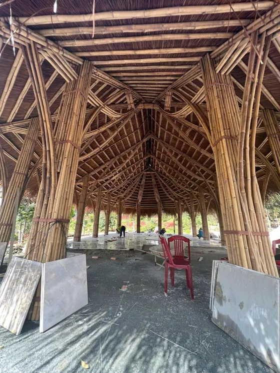
Cột bó và vì kèo đỡ mái vòm
Liên kết giữa các cây tre là phần quan trọng nhất của kết cấu. Tre được bó chặt bằng đai, bắt bu lông hoặc chốt xuyên tại các nút chịu lực, vừa giữ khung ổn định vừa cho phép tre co giãn tự nhiên theo thời tiết.
Lưu Ý Khi Chọn Tre Làm Kết Cấu Chịu Lực
- 01
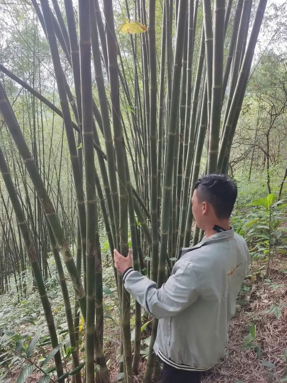
Thợ Tre Việt Building kiểm tra bụi tre tại vùng nguyên liệu
- 02
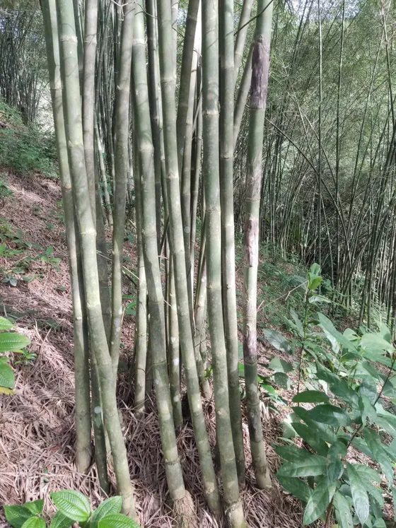
Bụi tre đủ tuổi khai thác
- Chọn tre già 3 - 5 năm tuổi: tre non nhiều nước và tinh bột, dễ co ngót, nứt và bị mọt.
- Bắt buộc xử lý chống mối mọt: tre phải được ngâm, luộc hoặc hun khói để thuốc thấm sâu vào thớ tre, xem chi tiết 7 bước xử lý tre tầm vông và quy trình xử lý tre luồng.
- Phơi đủ khô trước khi thi công: tre còn ướt khi khô sẽ co lại, làm lỏng các mối liên kết.
- Che chắn mưa nắng: mái đua rộng, chân cột cách nền, hạn chế nước đọng trên thân tre.
Tác Hại Của Việc Dùng Trúc Cho Thiết Kế Nhà Tre
Nhiều chủ nhà muốn tiết kiệm chi phí nên chọn cây trúc thay cho tre làm cột, kèo. Trúc đẹp, thẳng, giá rẻ nhưng không phù hợp làm kết cấu chịu lực cho nhà tre. Dùng sai vật liệu sẽ gây ra những tác hại sau:
Thân nhỏ, chịu lực kém
Cây trúc thân nhỏ, vách mỏng, không đủ sức đỡ mái lớn. Cột, kèo dễ cong võng, mái xệ sau một thời gian sử dụng.
Dễ nứt, dập khi liên kết
Vách trúc mỏng nên khi khoan, bắt bu lông hay đóng chốt rất dễ nứt dọc thân, mối nối yếu đi nhanh chóng.
Khó uốn cong, khó bó cột
Trúc khó uốn thành vì kèo, vòm mái lớn. Muốn đủ chịu lực phải bó rất nhiều cây, kết cấu rối và nặng nề.
Tốn kém về lâu dài
Phải dùng nhiều cây hơn, nhiều mối nối hơn, sửa chữa, thay thế thường xuyên nên tổng chi phí cao hơn dùng đúng loại tre.
Trúc vẫn là vật liệu rất đẹp khi dùng đúng chỗ: ốp tường, ốp trần trang trí, vách ngăn, lan can, rèm che nắng. Phần khung chịu lực của nhà tre nên dùng tre tầm vông đã qua xử lý hoặc tre luồng có thân lớn, vách dày.
Công Trình Tre Của KTS Võ Trọng Nghĩa: 100% Tre Tầm Vông
Kiến trúc sư Võ Trọng Nghĩa là một trong những người đưa kiến trúc tre Việt Nam ra thế giới. Các công trình tre của ông như wNw Café (Bình Dương), Trung tâm cộng đồng Đảo Kim Cương (TP.HCM) hay nhà hàng Vedana (Ninh Bình) đều dùng tre tầm vông làm kết cấu chịu lực chính: cột tre bó tỏa nhánh, vì kèo uốn cong và mái vòm vượt nhịp lớn mà không cần đến thép hay bê tông cho phần khung.
Tầm vông được chọn vì thân thẳng, vách dày, gần như đặc ở phần gốc, vừa cứng vừa dẻo nên uốn được theo đường cong mà vẫn giữ khả năng chịu lực. Dưới đây là một số hình ảnh công trình tre tầm vông theo thiết kế của KTS Võ Trọng Nghĩa.
Cột tre bó tỏa nhánh
- 01
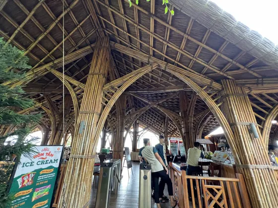
Cột tre bó tỏa nhánh đỡ mái
- 02
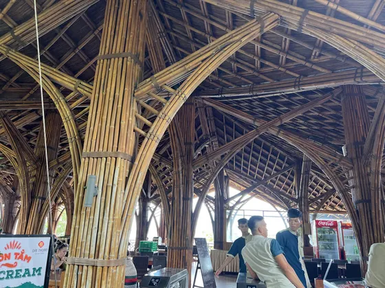
Nhiều cây tầm vông bó thành cột
- 03
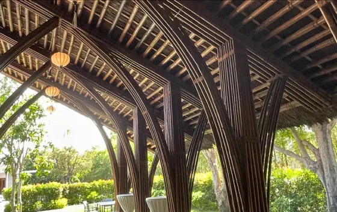
Hàng cột tre uốn cong
- 04
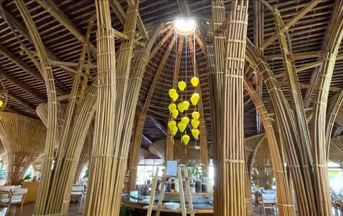
Cột tre quanh giếng trời
Mái vòm tre vượt nhịp lớn
- 01
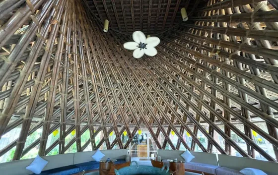
Mái vòm tre đan chéo
- 02
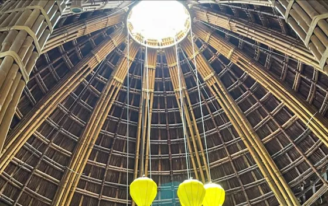
Mái vòm tỏa quanh giếng trời
- 03
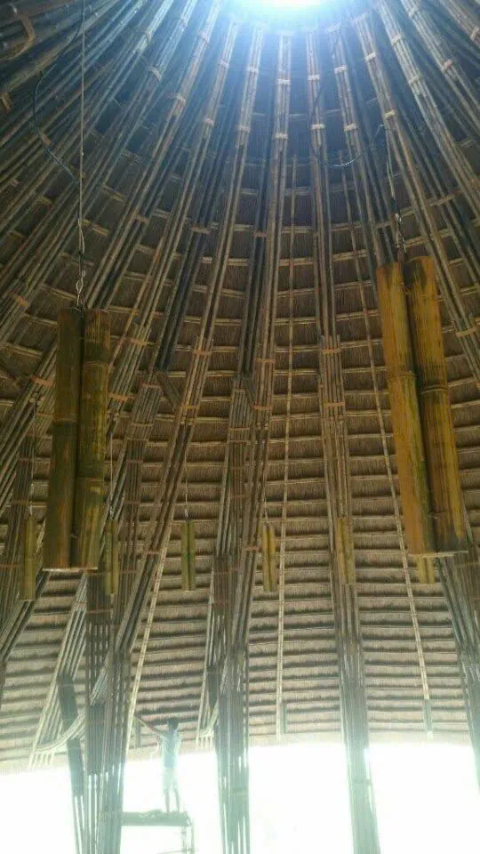
Vì kèo tỏa xuyên tâm
Không gian rộng dưới mái tre
- 01
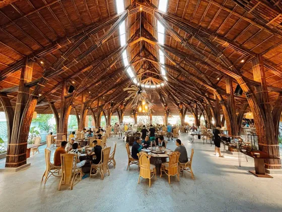
Nhà hàng kết cấu tre tầm vông
- 02
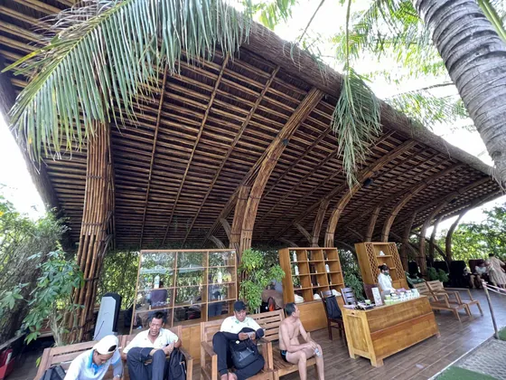
Mái tre vươn rộng che khu nghỉ
- 03
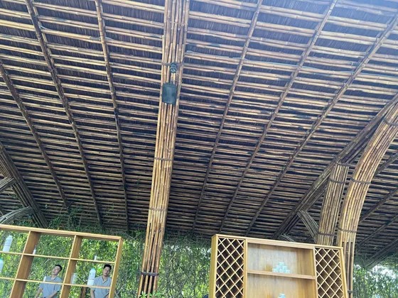
Hệ xà gồ tre bên dưới mái
- 04
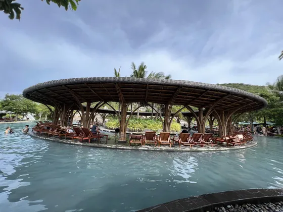
Chòi tre mái tròn giữa hồ bơi
Tre Việt Building cũng thi công nhiều công trình tre tầm vông theo lối kiến trúc này, tiêu biểu là nhà tre tầm vông uốn cong cho quán cafe tại Nha Trang. Xem thêm thiết kế thi công nhà tre uốn cong.
Mối Mọt: Mối Nguy Lớn Nhất Của Công Trình Tre
Dù kết cấu được thiết kế tốt đến đâu, nếu tre không được xử lý đúng kỹ thuật thì mối mọt vẫn sẽ phá hủy công trình từ bên trong. Mọt ăn tinh bột trong thân tre, bên ngoài nhìn vẫn nguyên vẹn nhưng ruột đã rỗng, đến khi phát hiện thì cột, kèo đã mất khả năng chịu lực.
- 01
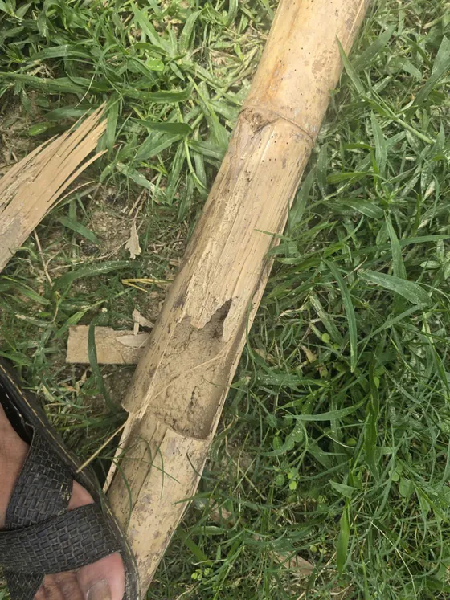
Mọt ăn rỗng ruột tre
- 02
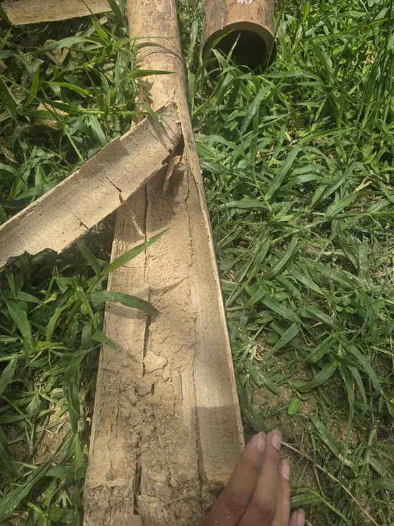
Thân tre mục nát vì mọt
- 03
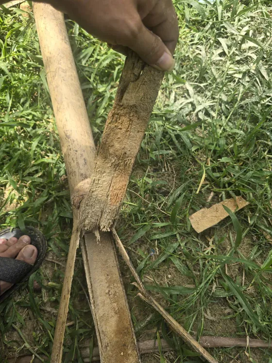
Bóp nhẹ đã vụn
- 04
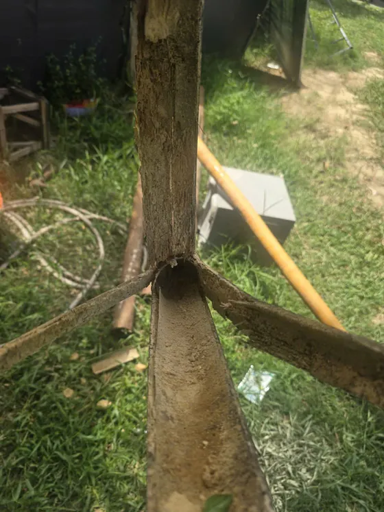
Chân cột tre bị mọt đục gãy
Vì vậy, khâu xử lý tre phải được thực hiện tại xưởng trước khi thi công, không thể chỉ quét thuốc bên ngoài. Tìm hiểu thêm về cách xử lý chống mối mọt cho tre và xử lý tre chống mối mọt tại Tre Việt Building.
Câu Hỏi Thường Gặp Về Kết Cấu Tre
1Công trình kết cấu tre dùng được bao lâu?
Tre được chọn đúng tuổi, xử lý chống mối mọt kỹ, phơi đủ khô và thi công có mái che, chân cột cách nền thì công trình có thể sử dụng hàng chục năm. Tre không xử lý thường chỉ dùng được 1 - 2 năm là bắt đầu bị mọt.
2Có nên dùng cây trúc làm cột, kèo nhà tre không?
Không nên. Trúc thân nhỏ, vách mỏng, dễ nứt khi liên kết nên không phù hợp làm khung chịu lực. Trúc nên dùng để ốp trang trí, làm vách ngăn, lan can.
3Vì sao tre tầm vông được dùng nhiều cho kết cấu tre?
Tầm vông thân thẳng, vách dày, cứng và dẻo, uốn cong được mà vẫn chịu lực tốt, rất phù hợp làm cột bó, vì kèo và mái vòm.
4Tre Việt Building có nhận thi công kết cấu tre trọn gói không?
Có. Tre Việt Building nhận tư vấn, cung cấp tre đã xử lý và thi công trọn gói nhà tre, chòi tre, quán cafe, nhà hàng. Tham khảo báo giá thi công nhà tre để dự trù chi phí.
Nhận Tư Vấn Thiết Kế, Thi Công Kết Cấu Tre
Bạn đang có ý tưởng làm nhà tre, quán cafe hay nhà hàng bằng kết cấu tre? Hãy liên hệ Tre Việt Building để được tư vấn phương án và báo giá miễn phí.
Nhận tư vấn & báo giá miễn phí
CÔNG TY TNHH TRE VIỆT BUILDING
Trụ sở917 Phạm Văn Đồng, Phường Linh Xuân, TP. Hồ Chí Minh
Nhà máy sản xuấtTổ 6, Ấp Phú Hợp, Xã Phú Lâm, Tỉnh Đồng Nai
Hotline/Zalo087.6915.999
Emailtreviet23@gmail.com
Websitetretruc.com.vn